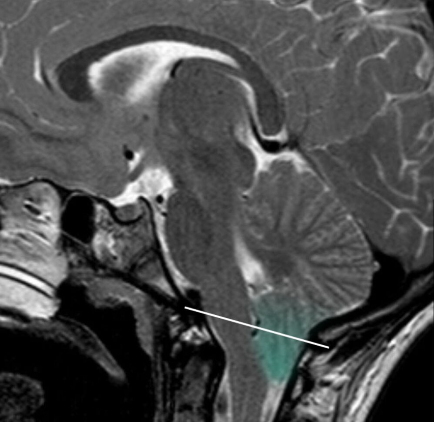
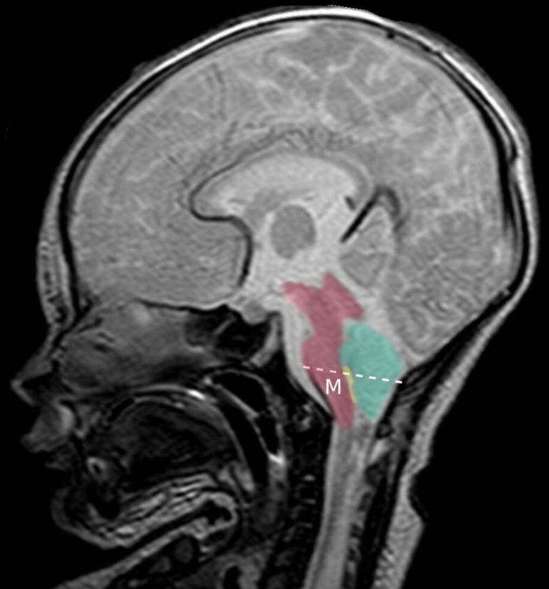

1) Description of Measurement
Chiari malformations are congenital abnormalities of the posterior fossa characterized by caudal displacement of hindbrain structures through the foramen magnum. MRI-based measurements assess the degree and pattern of descent of the cerebellar tonsils, vermis, brainstem, and associated posterior fossa anatomy. These measurements help distinguish Chiari subtypes, evaluate cerebrospinal fluid obstruction, and identify associated pathologies such as syringomyelia, hydrocephalus, or spinal dysraphism.
2) Instructions to Measure
3) Normal vs. Pathologic Ranges
4) Important References
Friedlander RM. Congenital and Acquired Chiari Syndrome. N Engl J Med. 2024 Jun 20;390(23):2191-2198. doi: 10.1056/NEJMra2308055. PMID: 38899696.
Milhorat TH, Chou MW, Trinidad EM, Kula RW, Mandell M, Wolpert C, Speer MC. Chiari I malformation redefined: clinical and radiographic findings for 364 symptomatic patients. Neurosurgery. 1999 May;44(5):1005-17. doi: 10.1097/00006123-199905000-00042. PMID: 10232534.
Ciaramitaro P, Ferraris M, Massaro F, Garbossa D. Clinical diagnosis-part I: what is really caused by Chiari I. Childs Nerv Syst. 2019 Oct;35(10):1673-1679. doi: 10.1007/s00381-019-04206-z. Epub 2019 Jun 3. PMID: 31161267.
Chiapparini L, Saletti V, Solero CL, Bruzzone MG, Valentini LG. Neuroradiological diagnosis of Chiari malformations. Neurol Sci. 2011 Dec;32 Suppl 3:S283-6. doi: 10.1007/s10072-011-0695-0. PMID: 21800079.
5) Other info....
Type I Chiari malformation is the most common anomaly; 1 in 1,000 live births. Type II Chiari malformation is less common. Type III is even rarer. Symptoms do not correlate perfectly with millimeters of tonsillar descent. Posterior fossa size, not just tonsillar position, plays a major role in pathophysiology.